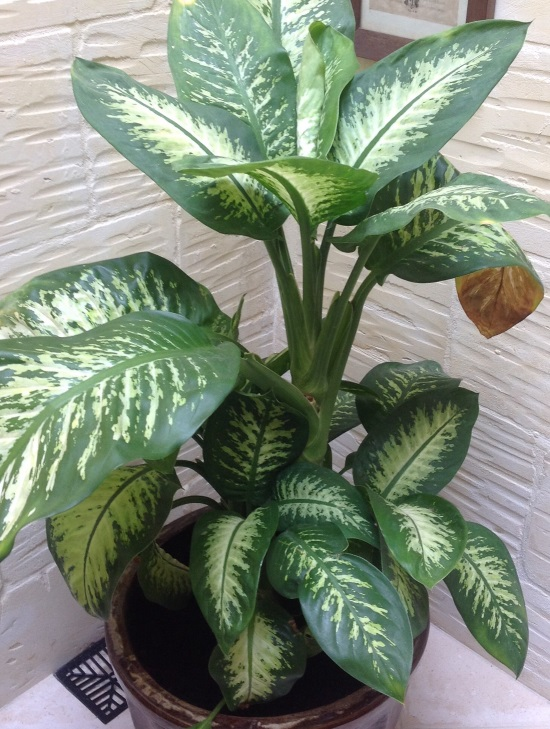

|  |
SITE SELECTION Genus: Dieffenbachia Species: amoena Family: Araceae Life Cycle: Perennial Country/Region Of Origin: Central and South America https://plants.ces.ncsu.edu/plants/dieffenbachia-amoena/common-name/tropic-snow-dumbcane/ |
|
DESCRIPTION Dieffenbachia amoena, or also known as the Dumbcane Tropic Snow. 'Dumbcane' is a beautiful monocot that is popular as a houseplant. It has large (up to 20-inch) oblong leaves with cream or yellow dots and stripes, as well as vivid green stripes and bands along the outside edge. If fruit grows, it will depict a berry. Flowers appear on erect spikes enveloped by cream-green spathes and can show up at any period of year. These, however, are very seldom seen in cultivation. |